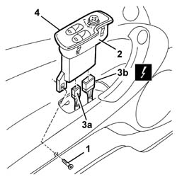

7005M14 ELECTRIC WINDOWS, REAR VIEW MIRRORS and CENTRAL LOCKING SWITCH unit on driver's front door - R.R.
- Path
- Procedures > 70 FITTINGS > 7005 PASSENGER COMPARTMENT FRONT SIDE DOORS > 7005M front electric windows > 7005M14 ELECTRIC WINDOWS, REAR VIEW MIRRORS and CENTRAL LOCKING SWITCH unit on driver's front door - R.R.
- Kind
- repair procedure (removal / refitting; the operation number is the code)
- Applies to
- all engines; all production periods
- Interactive page
- https://sloeber94.github.io/elrnDB-a147/en/#/3025677
Applies to: all engines; all production periods
 Removing
Removing
 Refitting
Refitting1. Unscrew the bolt.
2. Gently extract the switch unit and control unit.
3. Disconnect the electrical connections (3a, 3b).
 | Name | Connector |
|---|---|---|
3a | Electric window controls on front door |
| Name | Connector |
|---|---|---|
3b | Electric window controls on front door |
4. Recover the switch unit and control unit.

Applies to: all engines; all production periods
Refitting
RemovingCheck that the switch unit and control unit is not damaged.
Connect the electrical connection.
Fit the switch unit and control unit in position.
Tighten the bolt.
Check that the switches are working properly.
Topics linked from this page (2)
- H44A Electric window controls on front door ( Connectors )
- H44B Electric window controls on front door ( Connectors )
Topics that link to this page (23)
- M02 ELECTRIC FRONT WINDOWS / NOT WORKING IN AUTOMATIC MODE
- M11 ONE OF THE ELECTRIC FRONT WINDOWS NOT WORKING
- M30 NO AUDITORY SIGNAL WHEN OPERATING THE ELECTRIC WINDOW CONTROLS
- 5505B11 front door wiring - r r
- 5580T10 bose sound system front speaker (one), lh or rh - r r
- 7005A05 front side door water guard protection r r or arrange
- 7005A28 front side door limiter- repair or replace
- 7005C11 front side door outside handle r r
- 7005C15 front side door lock barrel (in handle) - r+r
- 7005C43 link connecting front side door barrels/catch - r+r
- 7005C53 interior opening handle - r r
- 7005C55 front side door interior opening return device (with handle) - r+r for repair or replacement
- 7005D15 front side door descending window glass r r
- 7005D16 fixed window glass element - r r
- 7005D21 front door window front guide - r r
- 7005D25 front door window rear guide - r r
- 7005D33 channel of door descending glass inner guide (one) lh or rh on front side door - r r
- 7005E08 front side door interior panel r r
- 7005M21 front side door electrically operated window - r r
- 7005M40 front electric window system ecu - r+r following electrical wiring check
- 7005N21 front side door lock motor-lock assembley-r r
- 7005R40 rear view mirror-s and door mirror-s positioning switch unit - r r
- 7205E36 Stripping FRONT SIDE DOOR